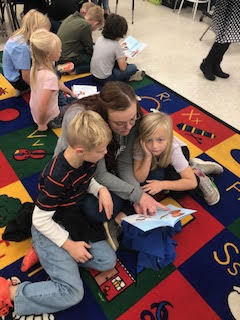
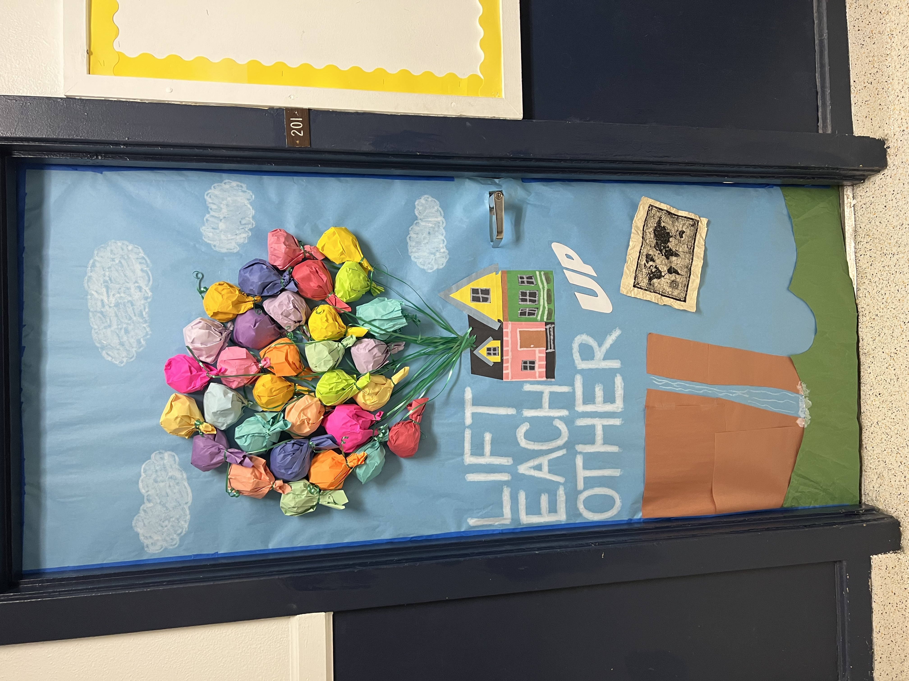

Grayson County
Branch: Basic Needs | Treatment: Division-Wide | Cohort 1
Review copy and leave comments
Grayson County's implementation of a multi-tiered system of supports (MTSS) across its six schools gave the division a clear structure for integrating the community schools work. Rather than building a separate program, the division mapped community schools onto the teams, meeting structures, and data practices already in place. This foundation ensures students have consistent support for their basic needs in every building. Every school operates a clothing closet and school supply program. Four of the six have laundry rooms. All six run substance use prevention programming and in-school health clinics.
Staff are paid stipends to mentor students, an intentional investment in a rural community with limited volunteer availability. All of it serves a shared goal across every school in the division: reducing chronic absenteeism. At Grayson Highlands School, that rate has dropped from 10% to 5%.
Community Engagement Across Grayson County
21 Events | 3,150 Attendees | 27 Partners

Fries Elementary Family Night
Fries Elementary hosted a circus-themed family night that brought together 12 community agencies, including: healthcare, banking, law enforcement, fire and rescue, a state park, and local businesses. This was one of five events the school held for families and the community this year; across all five, 600 attendees participated.
View the Family Night program



At Independence Elementary, the Raising a Reader event brought families into the school for a literacy night. At Grayson County High, students earned incentives for meeting the school-wide attendance goal for the first quarter, including a school-wide costume day. The Red Carpet welcome at Fairview Elementary on the first day of school delivered a balloon arch and velvet ropes despite the rain. At Independence Middle, homerooms decorated their doors as part of a school-wide anti-bullying and kindness campaign.
Community Partners
- Tri-Area Health
- Wytheville Community College
- William King Art Center
- Matthew's Foundation
- VA Cooperative Extension Agency
- Skyline National Bank
- Grayson County Sheriff's Office
- Fries Fire and Rescue
- New River Trail State Park
- Trout Dale/Flat Ridge/Grant Community Center
- Blue Ridge Discovery Center
- Mt Rogers Community Health
- Independence Community Services
- Matthew's Farm